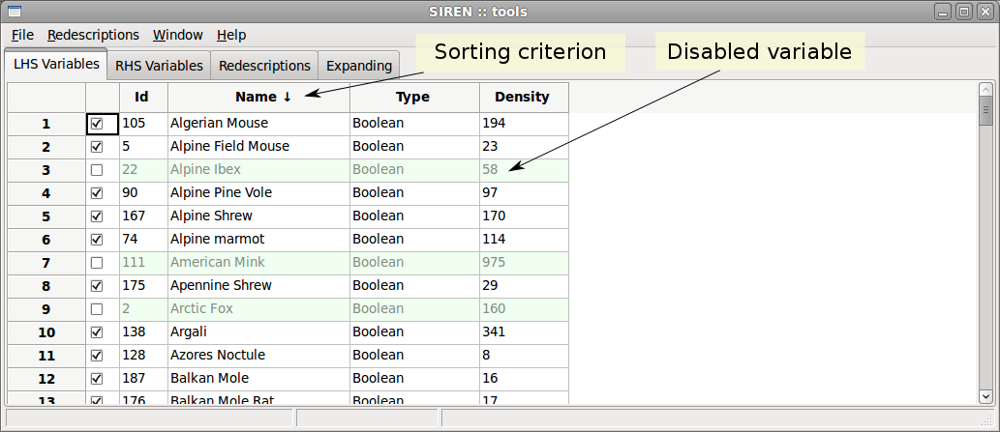
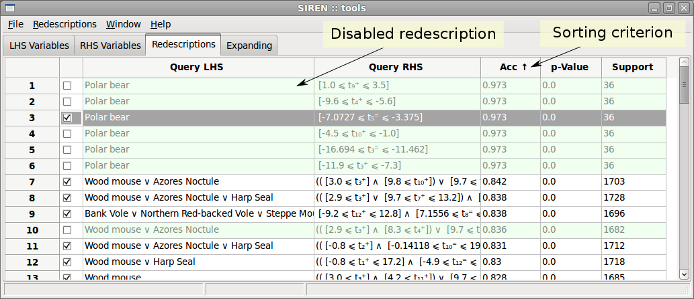
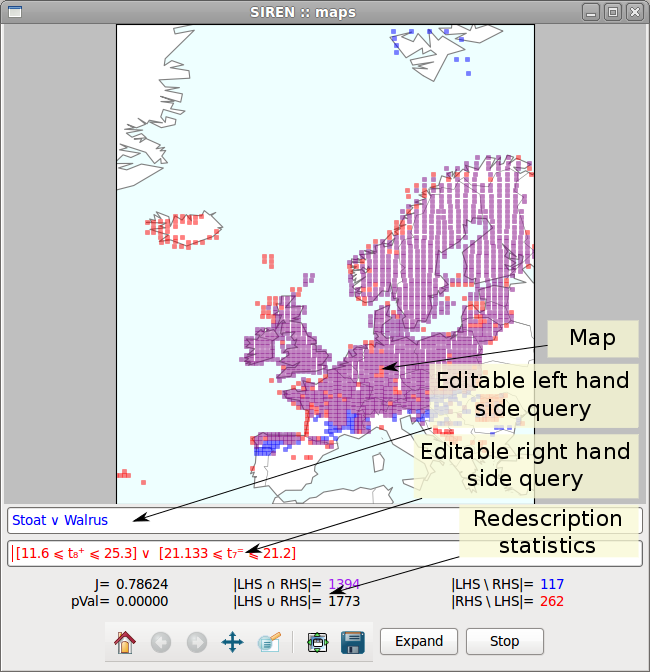

Functionalities
The main functionalities of Siren include:
- Displaying a geospatial redescription on a map.
Spatial redescriptions can be displayed on a map to show the locations
where both queries hold (purple squares), only the left hand side query
holds (blue squares) and only the right hand side query holds (red
squares).
- Editing a redescription.
Existing redescriptions can be edited and the map and statistics will be
recomputed and changes reflected in the original redescription in the
list. It is also possible to build a new redescription from scratch.
- Expanding a redescription.
An existing or an edited redescription can be extended, all best extensions are appended to the expansion list.
- Mining redescriptions.
Starting from an empty redescription, mines for redescriptions.
The expansion list is updated after extending each initial pair
with the filtered list of redescriptions found so far.
- Selection of a subset of variables.
It is possible to select a subset of variables for use in mining/expanding, by disabling some variables.
- Filtering a redescription list.
For a chosen redescription in a list, filter redundant redescriptions
among those
found below it, i.e., redescriptions having overlap with the chosen
redescription in the left or right query over a chosen threshold.
- History list.
A concealable history tab keeps track of edited redescriptions, allowing to undo modifications.
Interface
The interface has two panels.
-
A Tools window with tabs containing the lists of variables and of redescriptions.
-
None to several Map windows each displaying a redescription on a map with its statistics.
Tools window, variables list

Tools window, redescription list

Map window

Siren --- Last modified: Wed Aug 1 2012, galbrun@cs.helsinki.fi